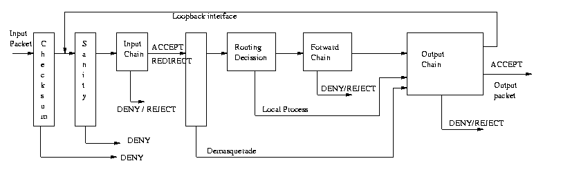

Linux ipchains es una reelaboración del código de IPv4 firewalling de Linux ,que fué desarrollado casi en su totalidad desde el código de BSD ; y de la utilidad ipfwadm, reescritura a su vez de ipfw de BSD . Es necesario para la adminstración de los filtros de paquetes IP en los núcleos de linux versiones 2.1.102 o superiores.
|
Podemos preguntarnos, ya que existía una utilidad previa de administración, por qué la necesidad de un nuevo sistema de gestión de filtros de paquetes. La razón es sencilla: El viejo código de cortafuegos no maneja fragmentación, tiene contadores de 32 bits ( al menos en Intel ), no permite especificar protocolos distintos de TCP, UDP o ICMP; no permite grandes reconfiguraciones de modo atómico, no se pueden especificar reglas mediante negación, tiene algunas "peculiaridades" y es difícil de gestionar, haciéndolo propenso al error
Desde la versión del núcleo 2.1.102, el código de ip-chains está incluído en él. Para las series 2.0 del núcleo, se necesita obtener un parche para el núcleo desde la página web. Si la versión del núcleo es más moderna que la del parche no debería haber problemas: esta parte del núcleo es altamente estable ( por ejemplo, el parche de la versión 2.0.34 funciona sin problemas sobre el núcleo 2.0.35 ). Puesto que dicho parche es incompatible con los parches de ipportfw e ipautofw, no se recomienda aplicarlo a menos que realmente se necesiten las funcionalidadesw que ipchains ofrece
El principio de funcionamiento es sencillo:
Todo el tráfico a través de una red es enviado en forma de paquetes. Por ejemplo, bajar este artículo (digamos 30 Kbytes) puede resultar en la recepción de aproximadamente 22 paquetes de 1460 bytes cada uno (por poner unos números como ejemplo) .
|
El comienzo de cada paquete dice de dónde viene, a dónde va, el tipo de paquete y otros detalles administrativos. Este encabezamiento del paquete es denominado cabecera. El resto del paquete, que contiene los datos a transmitir se conoce normalmente como cuerpo
Un filtro de paquetes es una pieza de software que mira la cabecera de los paquetes que lo atraviesan, y decide qué hacer con el paquete. Puede decidir denegar el paso a través del filtro (esto es: descartarlo como si nunca hubiera llegado ); aceptarlo (dejarlo pasar) o rechazarlo (como denegarlo, pero avisando al origen del envío que el paquete ha sido rechazado).
|
En Linux, el filtrado de paquetes se realiza a nivel de núcleo; Además hay una serie de "trucos" que podemos realizar con cada paquete, pero el principio general de mirar la cabecera y decidir que se hace con cada paquete se mantiene.
Uno se podría preguntar cúal es la razón de la necesidad de un filtro de paquetes. Tenemos tres razones fundamentales:
|
Antes de continuar, vamos a preparar el sistema para que pueda manejar ip-chains. La mayor parte de las distribuciones estandard, proveen núcleos precompilados con soporte para ip-chains. Para saber si nuestro sistema lo soporta, basta con comprobar que exista el fichero /proc/net/ip_fwchains . En caso negativo, deberemos recompilar el núcleo. El listado 1 muestra las opciones relativas a la red local que debemos habilitar:
# # Networking options # CONFIG_PACKET=y CONFIG_NETLINK=y CONFIG_RTNETLINK=y CONFIG_NETLINK_DEV=y CONFIG_FIREWALL=y CONFIG_FILTER=y CONFIG_UNIX=y CONFIG_INET=y CONFIG_IP_MULTICAST=y # CONFIG_IP_ADVANCED_ROUTER is not set # CONFIG_IP_PNP is not set CONFIG_IP_FIREWALL=y CONFIG_IP_FIREWALL_NETLINK=y CONFIG_NETLINK_DEV=y CONFIG_IP_TRANSPARENT_PROXY=y CONFIG_IP_MASQUERADE=y CONFIG_IP_MASQUERADE_ICMP=y CONFIG_IP_MASQUERADE_MOD=y CONFIG_IP_MASQUERADE_IPAUTOFW=m CONFIG_IP_MASQUERADE_IPPORTFW=m CONFIG_IP_MASQUERADE_MFW=m CONFIG_IP_MASQUERADE_VS=y CONFIG_IP_MASQUERADE_VS_TAB_BITS=12 CONFIG_IP_MASQUERADE_VS_RR=m CONFIG_IP_MASQUERADE_VS_WRR=m CONFIG_IP_MASQUERADE_VS_WLC=m # CONFIG_IP_ROUTER is not set CONFIG_NET_IPIP=m CONFIG_NET_IPGRE=m CONFIG_NET_IPGRE_BROADCAST=y # CONFIG_IP_MROUTE is not set CONFIG_IP_ALIAS=y # CONFIG_ARPD is not set CONFIG_SYN_COOKIES=y CONFIG_INET_RARP=m CONFIG_SKB_LARGE=y # CONFIG_IPV6 is not set CONFIG_IPX=m # CONFIG_IPX_INTERN is not set # CONFIG_SPX is not set CONFIG_ATALK=m # CONFIG_X25 is not set # CONFIG_LAPB is not set # CONFIG_BRIDGE is not set # CONFIG_LLC is not set # CONFIG_ECONET is not set CONFIG_WAN_ROUTER=m # CONFIG_NET_FASTROUTE is not set # CONFIG_NET_HW_FLOWCONTROL is not set # CONFIG_CPU_IS_SLOW is not set |
| Listado 1: Opciones de red en el núcleo para soporte de IP-Chains |
|---|
#! /bin/sh
# Script to control packet filtering.
IPCHAINS=/sbin/ipchains
IPCHAINSCONF=/etc/sysconfig/ipchains.rules
# If no rules, do nothing.
[ -x $IPCHAINS ] || exit 0
[ -f $IPCHAINSCONF ] || exit 0
case "$1" in
start)
echo -n "Turning on packet filtering:"
/sbin/ipchains-restore < $IPCHAINSCONF || exit 1
echo 1 > /proc/sys/net/ipv4/ip_forward
echo "."
;;
stop)
echo -n "Turning off packet filtering:"
echo 0 > /proc/sys/net/ipv4/ip_forward
$IPCHAINS -X
$IPCHAINS -F
$IPCHAINS -P input ACCEPT
$IPCHAINS -P output ACCEPT
$IPCHAINS -P forward ACCEPT
echo "."
;;
*)
echo "Usage: /etc/init.d/packetfilter {start|stop}"
exit 1
;;
esac
exit 0
|
| Listado 2: Script de arranque de la configuración de IP-Chains |
|---|
Ajustaremos los enlaces de los directorios /etc/rc.d/rcX.d/ para que se ejecute en el arranque de la máquina antes de inicializar la red ( para evitar que durante el arranque se nos pueda "colar" alguien )
Vamos a explicar como funciona el filtrado de paquetes con IP-Chains. Podemos empezar con un ejemplo muy sencillo, tomado del número anteriór de Linux Actual, en el artículo sobre Intranets con Linux:
root@osito# ipchains -P forward DENY root@osito# ipchains -A forward -i ppp0 -j MASQ root@osito# echo 1 > /proc/sys/net/ipv4/ip_forward
La primera línea efectua un reset general de la política de forwarding de paquetes. La segunda habilita el forwarding hacia el interfaz de red ppp0 ( una conexión PPP, que corresponde al modem de nuestra intranet ), especificando que se debe hacer masquerading; por último, el tercer comando habilita el forwarding de paquetes entre interfaces
|
Tenemos aquí el primer dato: Como su nombre indica, ipchains funciona a mediante una serie de familias de filtros encadenadas. Por defecto el sistema define tres familias:
|  |
| Figura 1: diagrama de flujo de los módulos de ipchains |
|---|
Además el usuario puede definir sus propias cadenas de filtros.
La figura 1 ilustra este esquema. Por cada paquete entrante, se analizan en orden cada una de las reglas definidas, y en su caso se toma una decisión ( aceptar, denegar o rechazar ), o bien se salta a una nueva regla. Si analizamos el dibujo, tenemos los siguientes elementos:
|
El método de trabajo consiste en definir una política de routing, traducirlo a reglas de ipchains e implementarlas. Veamos a continuación cómo se generan e introducen dichas reglas
La creació, y edición de reglas de filtrado se realiza con el programa ipchains. Las operaciones básicas que podemos realizar con él son:
Veamos un ejemplo sencillo: vamos a desactivar el interface local. podemos observar el resultado en el listado 3.
# ping -c 1 127.0.0.1 PING 127.0.0.1 (127.0.0.1): 56 data bytes 64 bytes from 127.0.0.1: icmp_seq=0 ttl=64 time=0.2 ms --- 127.0.0.1 ping statistics --- 1 packets transmitted, 1 packets received, 0% packet loss round-trip min/avg/max = 0.2/0.2/0.2 ms # ipchains -A input -s 127.0.0.1 -p icmp -j DENY # ping -c 1 127.0.0.1 PING 127.0.0.1 (127.0.0.1): 56 data bytes --- 127.0.0.1 ping statistics --- 1 packets transmitted, 0 packets received, 100% packet loss # |
| Listado 3: Ejemplo de regla: desactivación del interface local |
|---|
Veamos más en detalle las diversas opciones:
ipchains -D input 1y
ipchains -D input -s 127.0.0.1 -p icmp -j DENYproducen el mismo resultado. Observese que la sintaxis para el borrado de reglas debe ser coherente con la regla que se insertó
192.168.1.2 Dirección IP 192.168.1.2/32 Dirección/nº de bits de máscara 192.168.1.2/255.255.255.255 Dirección/máscaraSon equivalentes y se refieren a una única dirección IP
-p TCP :1023paquetes TCP que tengan un puerto inferior o igual a 1023
-p TCP -d ! 192.168.1.1 wwwindica aquellas peticiones al puerto httpd que no vengan de la dirección 192.168.1.1
-p TCP -d 192.168.1.1 ! wwwindica aquellas direcciones que vengan de la dirección 192.168.1.1 y que NO vayan dirigidas al puerto www
-p icmp -i eth+indica todos los paquetes icmp que vengan de cualquier interfaz ethernet
Existen otras muchas opciones avanzadas, como poder manejar fragmentos de paquetes, filtrar paquetes SYN de conexión TCP, etc. Remitimos al lector a las páginas de manual
Con el comando ipchains-save podemos almacenar la configuración que hemos hecho. ipchains-save lista por la salida estandard una serie de comandos compatibles con ipchains que proporcionan información suficiente para regenerar la configuración
|
El comando opuesto a ipchains-save es , por supuesto ipchains-restore
Para la gente que utilizaba el programa ipfwadmin del antiguo núcleo 2.0 existe un programa ipfwadm-wrapper que convierte los ficheros de configuración al nuevo formato
Hemos visto y estudiado el manejo de los filtros de paquetes IP que el núcleo 2.2 incorpora, así como procedido a realizar algunos ejemplos sencillos de configuración. IP-Chains es una herramienta versatil y poderosa que elimina muchas de las dificultades que los usuarios del núcleo 2.0 teníamos para la configuración de filtros de red y para las tareas de IP-Masquerading.
|
No obstante, no todo son ventajas: IP-Chains solo sabe manejar paquetes TCP-IP. Si bien sigue siendo el núcleo fundamental de los entornos de red, no es el único protocolo existente. Por ello los programadores de núcleo Linux no se han dormido en los laureles, y para la versión 2.4 del núcleo IP-Chains desaparecerá, dando lugar a una nueva herramienta: Net-Filter que permite una configuración completa, con independencia del protocolo.
Remitimos al lector a las diversas FAQ y HOWTO's sobre el tema: